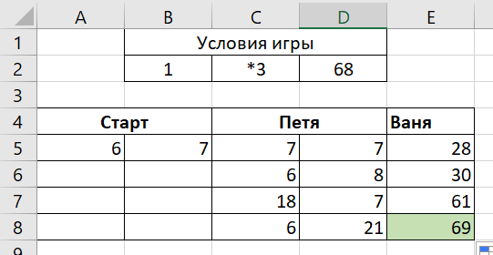

Choice of Task

Два игрока, Петя и Ваня, играют в следующую игру. Перед игроками лежит куча камней. Игроки ходят по очереди, первый ход делает Петя.
За один ход игрок может добавить в кучу один камень или увеличить количество камней в куче в два раза.
Для того чтобы делать ходы, у каждого игрока есть неограниченное количество камней. Игра завершается в тот момент, когда количество камней в куче становится не менее 129.
Победителем считается игрок, сделавший последний ход, т.е. первым получивший кучу из 129 или больше камней. В начальный момент в куче было S камней, 1 ≤ S ≤ 128.
Будем говорить, что игрок имеет выигрышную стратегию, если он может выиграть при любых ходах противника.
Задание 19.1
Ваня может выиграть, если своим последним ходом увеличит количество камней в куче до значения, большего или равного 129. У игроков доступны 2 команды, применив одну из которых, Ваня сможет победить за последний ход. До хода Вани Петя должен образовать кучу, меньшую чем 129. Поэтому Sмакс = 129-1 = 128; Sмин = 129:2 = 64, 5 ≈ 65. В диапазоне от 65 до 128 должно быть значение камней в куче после неудачного хода Пети. До хода Пети может S=65-1=64. При S19 = 64 Петя может и *2, но тогда в куче получится Sмакс, что всё равно приведёт к победе Вани за 1 ход. 64 является ответом.

Можно заметить, что Ваня совершает ход из чётных позиций, а Петя – из нечётных. Мы создаём рекурсивную функцию для проверки S19 и p. Ограничением рекурсии является выигрыш или значение позиции, большее 3. Тогда возвращается значение «False». В функции мы проверяем позицию на чётность. Если она чётна, то ход делает Ваня, который должен выиграть хотя бы одним из способов, для чего используется функция any() для кортежа. В противном случае ходит Петя, который не должен выиграть в любом из случаев, поэтому используется функция all() для кортежа. Далее мы перебираем значения из условия, которые может принимать значение S19, применяя функцию со стартовой позицией 1
решение программированием уже подразумевает часть от аналитического решения.
Задание 20.1
Из задания 19 нам известно, что при S=64 Петя проигрывает за 1 ход. Значит приведя кучу в состояние S=64, игрок выиграет за 2 хода. Тогда Петя должен сделать ход, Ваня совершал действия с 64 камнями. Для этого S20 = 64/2=32; S20 = 64-1=63. 3263 является ответом
В рекурсивной функции мы задаём ограничение: значение стало выигрышным или позиция стала больше последней. Выиграть должен Петя, у которого позиции нечётные. Поэтому в условиях мы проверяем ходы Пети (хотя бы один должен вести к выигрышному значению) функцией any(), а ходы Вани функцией (все ходы не должны вести к выигрышу) all() Далее перебираем значения из условия задания.
20 задание легко решается после получения ответа из 19 задания, поэтому не стоит писать программу
Задание 21.1
Из задания 20 нам известно, что при нахождении игрока на позиции с 63 или 32 камнями он выигрывает за 2 хода. В позиции с 63 камнями должен оказаться Ваня после хода Пети. Это возможно при 63-1=62=S21. Из данной позиции Петя мог и выполнить действие умножения на 2. Тогда позиция Вани была бы равна 62*2=124, что принадлежит диапазону значений из задания 19, позволяющих выиграть за 1 ход. Нам нужно наименьшее значение. Рассмотрим позицию Вани с кучей из 32 камней. Кучи, с которыми до этого значения работал Петя, получаются маленькими для выигрыша Вани за один ход. 62 является ответом
В условии задания сказано, что Ваня должен выиграть или за 1, или за 2 хода, что соответствует позициям 3 и 5. В рекурсивной функции в ограничении учитываем только превышение позиции 5, так как она наибольшая. Функция будет возвращать значение «True», если мы достигнем 3 или 5 позиции. Ваня ходит с чётных позиций, поэтому в условиях мы проверяем ходы Вани (хотя бы один должен вести к выигрышному значению) функцией any(), а ходы Пети функцией (все ходы не должны вести к выигрышу) all(). Далее перебираем значения из условия задания
долго рисовать на бумаге, поэтому можно прибегнуть к решению программой, кроме того стоит учесть волнение участников экзамена, поэтому аналитический способ может казаться труднее, чем обычно
Два игрока, Петя и Ваня, играют в следующую игру. Перед игроками лежат две кучи камней. Игроки ходят по очереди, первый ход делает Петя. За один ход игрок может добавить в одну из куч (по своему выбору) один камень или увеличить количество камней в куче в три раза.
Например, пусть в одной куче 10 камней, а в другой 7 камней; такую позицию в игре будем обозначать (10, 7). Тогда за один ход можно получить любую из четырёх позиций: (11, 7), (30, 7), (10, 8), (10, 21).
Для того чтобы делать ходы, у каждого игрока есть неограниченное количество камней. Игра завершается в тот момент, когда суммарное количество камней в кучах становится не менее 68. Победителем считается игрок, сделавший последний ход, т.е. первым получивший такую позицию, при которой в кучах будет 68 или больше камней. В начальный момент в первой куче было 6 камней, во второй куче – S камней; 1 ≤ S ≤ 61.
Будем говорить, что игрок имеет выигрышную стратегию, если он может выиграть при любых ходах противника.
Задание 19.1
Для нахождения минимального S19 мы подразумеваем, что за 2 хода будет увеличиваться вторая куча в 3 раза. При этом S должно быть больше количества камней в первой куче, иначе мы найдём не минимальное значение. Так как действия умножения совершались над второй кучей, S19 = (68-6) / 3 / 3 = 6,8 ≈ 7. 7 является ответом

Сначала запишем условие в отдельную табличку. Создаём другую таблицу, в первом столбце которой находятся стартовые значениями двух кучек (рис. 3). Следующий столбец показывает значения кучек после хода Пети. Для каждой пары ячеек двух внутренних столбцов пишем соответствующую пару формул: 1) =A5+1; =B1 2) =A5; =B1+1 3) =A5*3; =B1 4) =A5; =B1*3 За свой первый ход для выигрыша Ваня увеличит наибольшую кучу в 3 раза. В ячейках данного столбца будут значения сумм камней из двух куч. =МАКС(C5:D5)*3+МИН(C5:D5) В панели управления найдём команду «Условное форматирование» (рис.1). Задаём параметры для выделения цветом ячейки, содержащей значение, большее 68 (рис. 2). Далее перебираем значения в первом столбце, чтобы появилась цветная ячейка и выявляем ответ.

очень быстро решается аналитическим способом. Метод таблицы в Excel прост, но занимает время при построении
Задание 20.2
Первым ходит Петя с количеством камней (6, S20). Чтобы победить, он ставит задачу максимального приближения противника к выигрышному значению. Для этого первым ходом он увеличивает первую кучу в 3 раза. У Вани есть 4 варианта хода: (18+1, S20), (18, S20+1), (18*3, S20), (18, S20*3). Чтобы после хода Вани Петя смог выиграть, сходив как угодно, необходимо значение кучи 68-1 = 67. Самое наименьшее значение, которое для этого понадобится, S20 = 67-18*3 = 13. 13 является ответом
Создаём табличку со стартовыми значениями в первом столбце, а остальные 3 столбца показывают значения после 1 хода Пети, после 1 хода Вани и после хода-выигрыша Пети. Для каждого из четырёх возможных вариантов первого хода Пети существует 4 варианта первого хода Вани. В четвёртом столбце представлены по 4 варианта выигрышного хода Пети после 4 вариантов первого хода Вани. Создадим 5 столбец, где будет указано значение суммы камней двух кучек после первого хода Вани для проверки его выигрыша. В панели управления найдём команду «Условное форматирование» (рис. 1). В 4 столбце будем выделять зелёным цветом ячейки выигрыша (значения, большие или равные 68), первый ход Пети является подходящим, если после любого первого хода Вани Петя выигрывает (все 4 пары зелёные). В 5 столбце с тем же условием будем выделять ячейки красным, что означает, что 4 пары не подходят, так как Ваня уже выиграл. Перебираем значения и ищем такое, что хотя бы одна четвёрка значений 4 столбца будет зелёной без красных ограничителей в 5 столбце (рис. 2).
Метод таблицы в Excel прост, но занимает время при построении. Решение программой более объёмное и, возможно, не дающееся пониманию сразу, но эффективное
Задание 21.2
Создаём табличку с 6 столбцами: стартовое значение, после первого хода Пети, после первого хода Вани, после второго хода Пети, после второго хода Вани, проверка ограничений (Если после второго хода Пети в кучках окажется выигрышное значение, этот вариант не подходит). Каждый ход игрока разбивается на 4 варианта хода противника. Во втором столбце представлены 4 варианта результата хода Пети, каждый из которых мы задаём через формулы: 1) =A5+1; =B1 2) =A5; =B1+1 3) =A5*3; =B1 4) =A5; =B1*3 В третьем столбце растягиваются те же формулы, что и во втором столбце. Аналогично в четвёртом столбце. В условии задания сказано, что Ваня может выиграть за один ход или за 2 хода. Поэтому в третьем столбце под значениями двух кучек находим их сумму (=C3+D3). В пятом столбце находим результат оптимального хода Вани: =МАКС(J5:K5)*3+МИН(J5:K5) В последнем столбце, предпоследнем, как и в третьем столбце в ячейках суммы камней в кучках применяем из панели управления команду «Условное форматирование» (рис.1). Задаём заливку ячейки при значении, большем или равном 68 (в третьем и пятом столбцах зелёным, в шестом красным). Далее при переборе значений в исходном столбце проверяем каждую четвёрку в пятом столбце. У каждой из 4 пар из 2 столбца должна быть четвёрка из пятого столбца, подходящая одному из двух условий: 1) Вся четвёрка зелёная и ограничители в шестом столбце не сработали 2) Во втором столбце, соответствующему данной четвёрке, есть зелёная ячейка Если всё соблюдено, задаваемое значение является ответом (рис. 2).
Сначала мы кешируем результат выполнения рекурсивной функции, чтобы мы могли быстро получить значение. Для этого из библиотеки functools импортируем декоратор lru_cache и в дальнейшем прописываем перед рекурсивной функцией с параметром None (максимальная глубина). Далее создаём кортеж через функцию, в котором будут все возможные действия с кучами a, b. Создаём рекурсивную функцию game(h), где пограничным значением является выигрыш, поэтому возвращаем значение «W». Далее прописываем условия для опознания стадий выигрыша.
Первое условие проверяет ситуацию выигрыша Пети за 1 ход. Через генератор создаём кортеж: для каждого значения m из кортежа, возвращаемого функцией moves(h), в новый кортеж будет вноситься результат проверки значения, возвращаемого функцией game(m), на равенство значению «W» (выигрыш). В данном кортеже при помощи функции any() (аналогично логической операции or)проверяем хотя бы одну выигрышную «ветку», так как одного пути достаточно, чтобы выиграть. Если возвращается «True», то найдено значение выигрыша Пети за 1 ход. Далее следуют похожие условия. Во втором условии используется функция all() (аналогично логической операции and), так как нам необходимо, чтобы Ваня выигрывал при любом ходе Пети. В генераторе проверяется равенство функции значению «P1», так как Ваня должен прийти в ситуацию P1, в которой любой ход ведёт к выигрышу, то есть выигрышу 1 ходом. Третье условие содержит функцию any(), потому что Петя должен выиграть за 2 хода хотя бы одним из путей Сравнение значения функции game(m) с «B1» означает, что, сделав один ход, Петя попадает в ситуацию, в которой Ваня выигрывал за 1 ход.
В итоге Петя выигрывает в таком случае в 2 хода. Четвёртое условие подразумевает выигрыш Вани за 1 или 2 хода, поэтому функция game(m) в генераторе сравнивается с значением «P1» и со значением «P2» с помощью логической операции or. К кортежу применяется функция all() по такой же причине, что и во втором условии. Далее мы перебираем значения, указанные в условии задачи, избавляясь от значений, не подходящих заданиям при помощи условного оператора. В выводе выбираем значения, соответствующие заданию